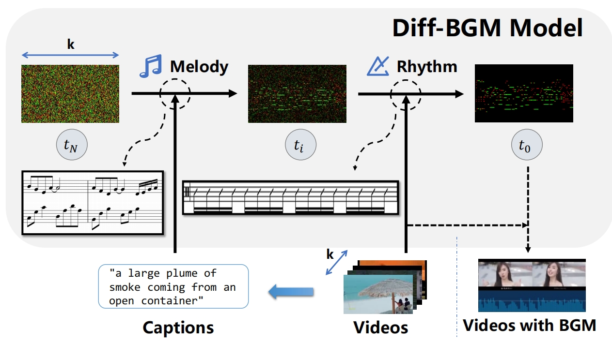
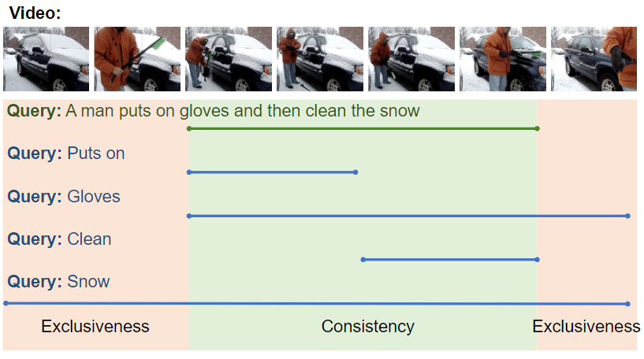
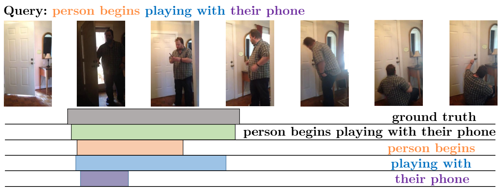
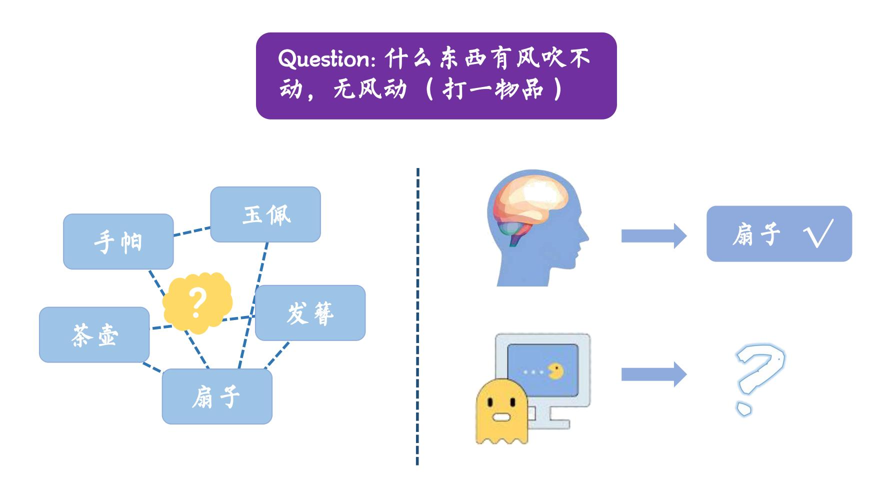
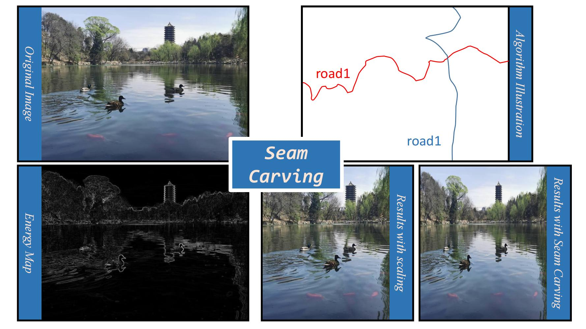
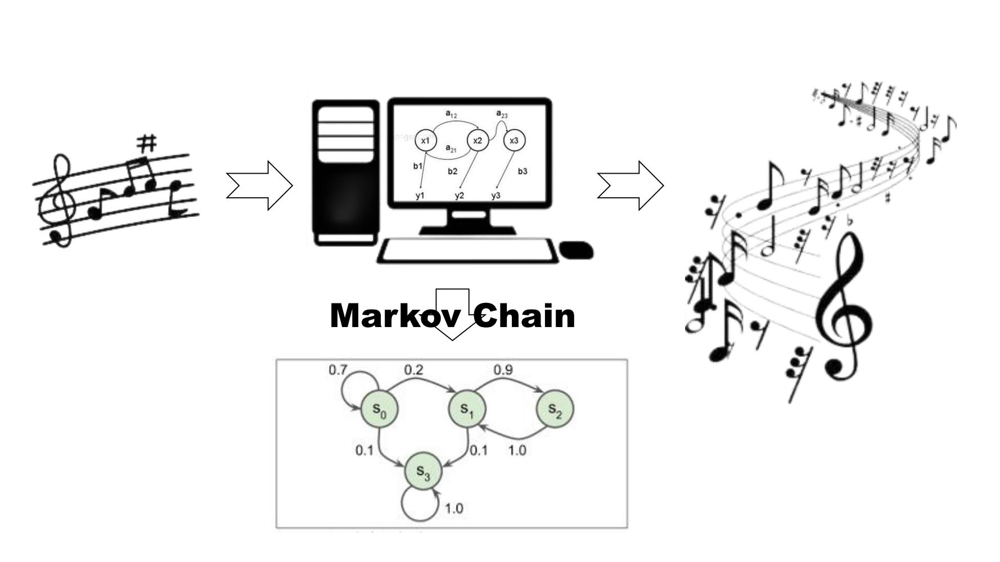
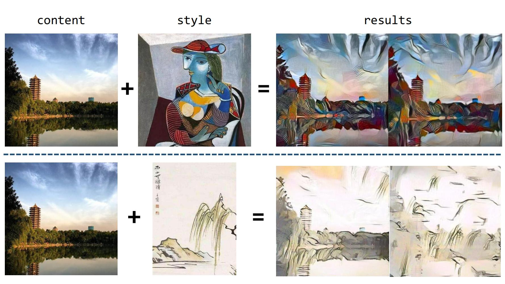

Sizhe Li
I am now an MPhil student at the University of Cambridge. I'm working on computer vision and multi-modal learning. Before that I received my bachelor degree from Peking University in June 2023.
I'm currently seeking job opportunities in machine learning or computer vision fields worldwide.
Education
University of Cambridge, Cambridge, UK (Oct. 2024 - Aug. 2025 Expected)
- MPhil in Machine Learning and Machine Intelligence (CV & Robotics track)
- Department of Engineering
Peking University, Beijing, China (Sep. 2019 - Jul. 2023)
- Bachelor in Computer Science
- School of Electronic Engineering and Computer Science (EECS)
Experience
Teaching Assistant (Sep.2023 - Jan.2024) Introduction to Computation (B).
Algorithm Engineer Intern (May.2023 - Sep.2023) Bytedance, Beijing.
Research Intern (May.2021 - Aug.2023) Wangxuan Institute of Computer Technology, Peking University, instructed by Assistant Prof. Yang Liu
Teaching Assistant (Feb.2023 - Jun.2023) Algorithm Design and Analysis.
Teaching Assistant (Sep.2022 - Jan.2023) Introduction to Computation (B).
Publications
|  | Diff-BGM: A Diffusion Model for Video Background Music Generation Sizhe Li, Yiming Qin, Minghang Zheng, Xin Jin, Yang Liu* CVPR 2024 [paper] [Bibtex] [code] [Project Page] [video] |
|  | Phrase-level Temporal Relationship Mining for Temporal Sentence Localization Minghang Zheng, Sizhe Li, Qingchao Chen, Yuxin Peng, Yang Liu* AAAI 2023 [paper] [Bibtex] [code] |
|  | Phrase-level Prediction for Video Tempotal Localization Sizhe Li, Chang Li, Minghang Zheng, Yang Liu* ICMR 2022 [paper] [Bibtex] [code] |
Awards
· 2022 School-level Merit Student of Peking University.
· 2022 JIUKUN Scholarship of Peking University.
· 2023 Outstanding Graduate of Peking University.
· 2023 Wang Xuan Scholarship of Peking University.
· 2023 Peking University Outstanding Undergraduate Graduation Thesis.
Projects
|
|
Tiny Compiler (Jan. 2023)
A Tiny Compiler to compile SysY into Risc-V, using KoopaIR as an interim. [codes] |
|  |
Chinese Riddle Task (Dec. 2021)
Fine-tuned a pretrained ernie model to deal with multi-choice Chinese riddle problems Reaserch advantages and disadvantages of current methods on dealing with the task. [codes] [report] |
|  |
Seam Carving for Image and Video (May.2021)
A mechanism of adjusting size of images and videos with seam carving |
|  |
Algorithmic Music Composition (May.2021)
Generated beautiful and different music with given music fragment using Markov Model |
|  |
Neural Style Transfer (May.2020 - Jun.2020)
An image style transfer algorithm with VGG19 framework, real-time transfer and video transfer Elegant user interface |
|
|
Chinese-Standard-Mahjong (Apr.2020 - May.2020)
Articifial Intelligence for Chinese-Standard-Mahjong working on Botzone Website [codes] |
|
|
Sudoku Game(Jan.2020)
Interesting Sudoku game with an elegant user interface [codes] [demo] |
|
|
Amazons game (Nov. 2019 - Jan. 2020)
Articifial Intelligence for Amazons working on Botzone Website and elegant user interface. [codes] [demo] [report] |